初唐女性既画细眉又画阔眉，且阔眉越来越成为女性所追求的时尚眉妆，亦为整个社会所接受，在多种因素的影响作用之下，孕育着唐代新时代特征的风貌。
柳叶眉：状似柳叶，眉形两头尖细，中间较宽。这种娟秀端庄的眉形深受女性青睐，成为了妇女日常的基本眉妆之一。
却月眉：比柳叶眉略宽，也更弯曲，形如新月。
阔眉：是较自然眉更为粗阔浓重的一种眉妆的通称。
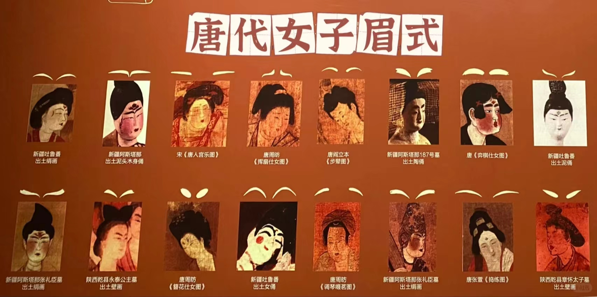 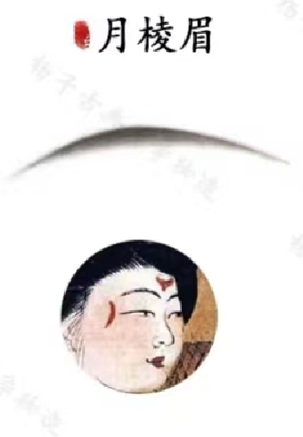 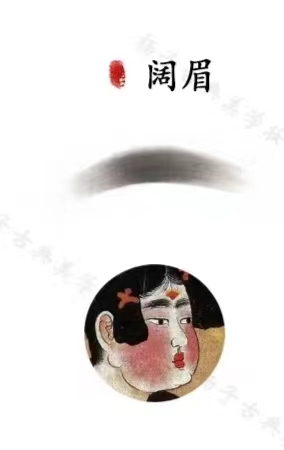蛾翅眉：眉形极其短阔，末端上扬。这是开元年间及天宝初最流行的一种阔眉。
这是开元年间及天宝初最流行的一种阔眉。安史之乱打破了一片太平盛世，击垮了唐人的自信与豪迈，人们的审美心态亦发生极大的扭曲。细长的眉形取代了阔眉，成为流行的时尚眉形。
青黛眉：形细长而色淡。
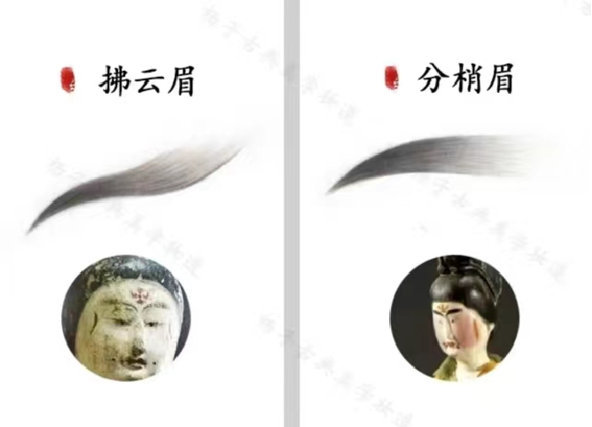 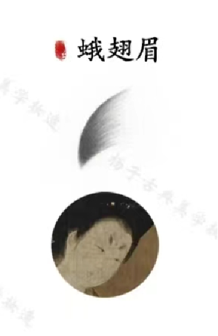 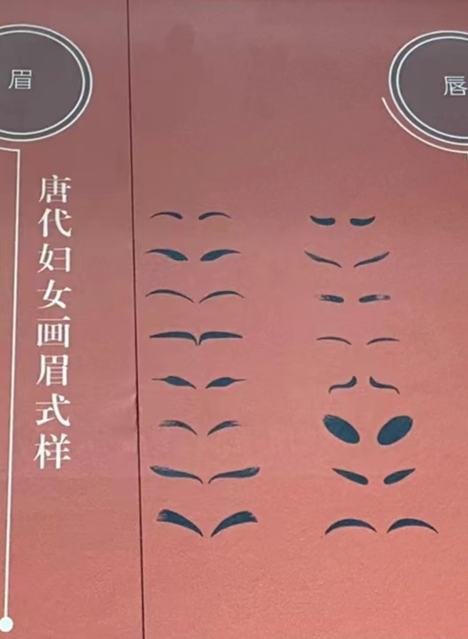唐代占主流审美的眼型是“凤眼”，这是一种外眼角向上扬起的眼型，“凤眼浓眉如画，微须白面红颜”，眼睛的弧度和眉毛的弧度相辅相成，展现出一种优雅贵气的气质来。
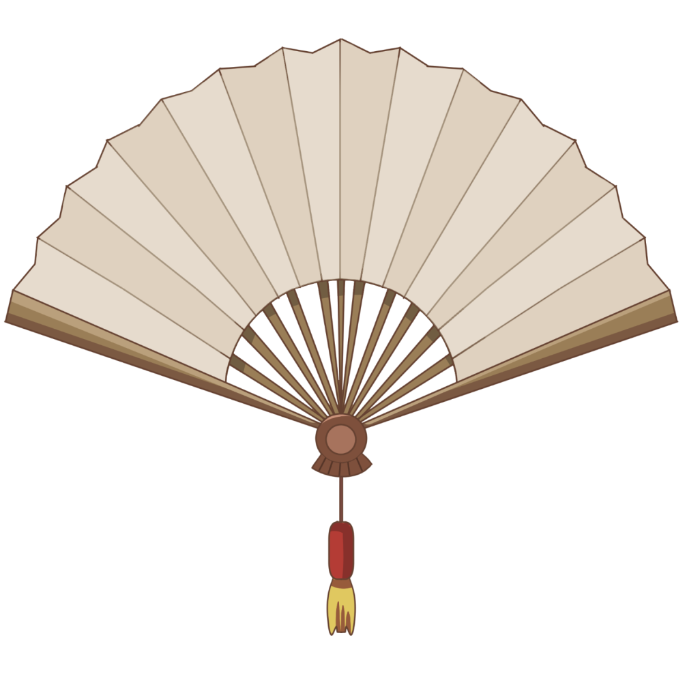在唐时期，常常采用大红色的朱砂和唇脂，整体看上去丰满圆润。初唐时期以纤小秀美为尚，周武时期逐渐向丰满、圆润发展，盛唐时期丰满圆润的唇形到达了顶峰。
用大量的脂粉涂抹面部，同时采用大面积的红妆。红妆是唐五代面妆的主流，有很多的女性甚至会将整个面颊用胭脂涂抹成红色，并以此为极致之美。
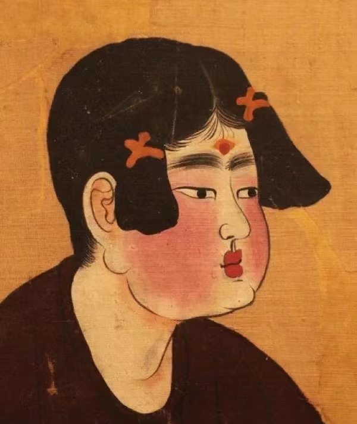 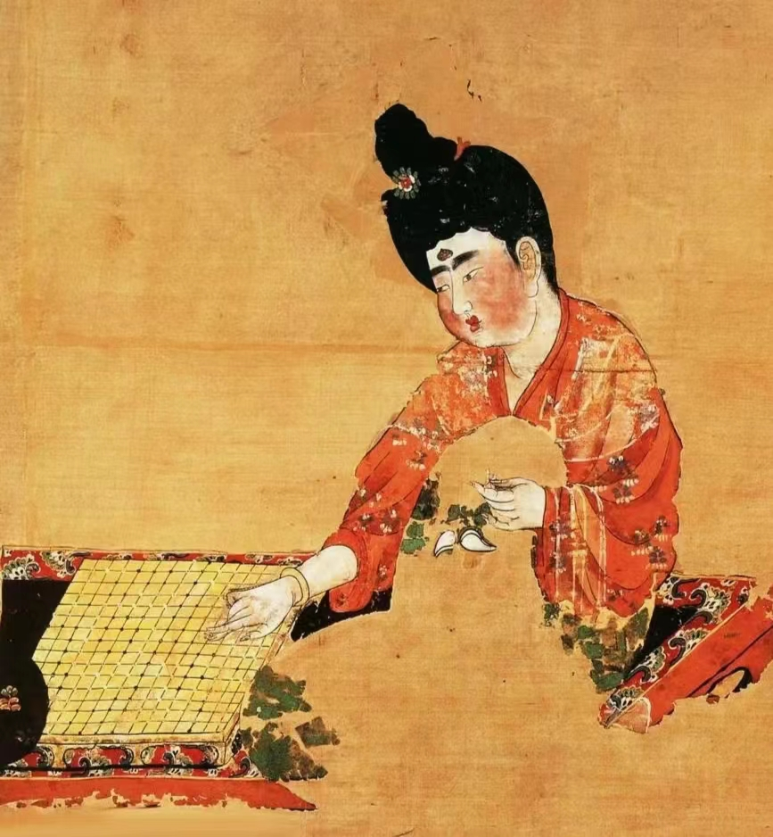 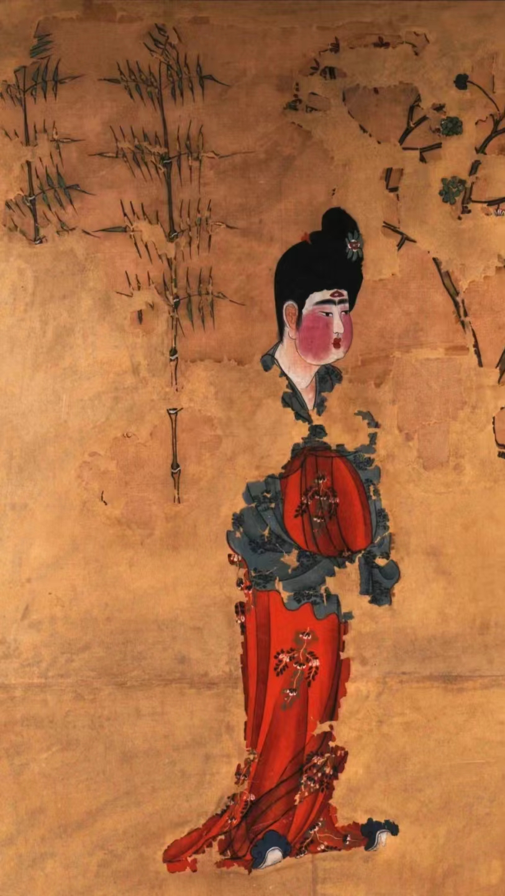唐时的斜红经历了几次流行变化, 起初只是呈简易的垂直伤痕状, 随后在武则天时代演变出云形、花形等繁丽的式样。 到了盛唐开元年间， 斜斗红式样再度简化, 流行也呈现出日渐式微的状态, 但仍偶有女性以彩绘飞鸟或金钿作为斜红的替代物装饰在脸畔。 中唐大历朝以后, 斜红一度消失, 但在长庆年间随着“血晕妆”的流行而有所回转, 变作夸张的伤痕或瘀血状。 直到晚唐仍偶见女子绘有斜红。
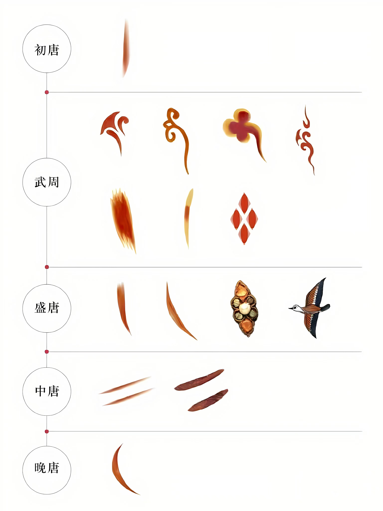初唐时身份较高的妇女，头发也高高耸立，义髻、飞天髻都属于高髻，一般的妇女的头发不足以达到这种高度，所以假发非常流行，在头发中加垫上木头做的假冠发垫等，把头发垫高，当时叫它义髻。盛唐时期，流行的是倭坠髻。中、晚唐时期，流行坠马髻，是种把头发挽到头顶上做摇摇欲坠的模样。
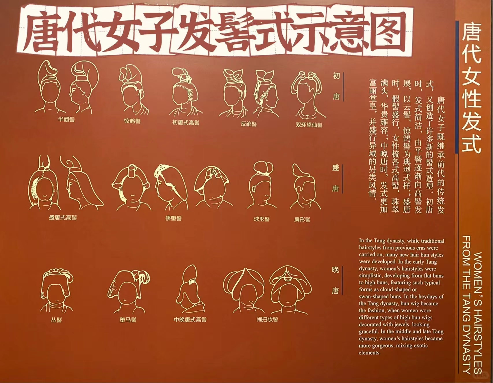